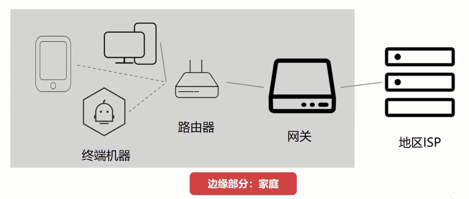

<h1 id="网络地址转换NAT技术"><a href="#网络地址转换NAT技术" class="headerlink" title="网络地址转换NAT技术"></a>网络地址转换NAT技术</h1><h1 id="目的"><a href="#目的" class="headerlink" title="目的"></a>目的</h1><p></p>
<h2 id="IP地址可以分为内网地址和外网地址"><a href="#IP地址可以分为内网地址和外网地址" class="headerlink" title="IP地址可以分为内网地址和外网地址"></a>IP地址可以分为<code>内网地址</code>和<code>外网地址</code></h2><p></p>
<h2 id="内网地址的分类"><a href="#内网地址的分类" class="headerlink" title="内网地址的分类"></a>内网地址的分类</h2><p></p>
<h2 id="外网不知道内网的具体设备发出的请求"><a href="#外网不知道内网的具体设备发出的请求" class="headerlink" title="外网不知道内网的具体设备发出的请求"></a>外网不知道内网的具体设备发出的请求</h2><h1 id="概念"><a href="#概念" class="headerlink" title="概念"></a>概念</h1><h3 id="网络地址转换技术"><a href="#网络地址转换技术" class="headerlink" title="网络地址转换技术"></a>网络地址转换技术</h3><p></p>
<h2 id="端口号"><a href="#端口号" class="headerlink" title="端口号"></a>端口号</h2><p></p>
<h2 id="端口号的转换"><a href="#端口号的转换" class="headerlink" title="端口号的转换"></a>端口号的转换</h2><h3 id="NA-P-T表"><a href="#NA-P-T表" class="headerlink" title="NA(P)T表"></a>NA(P)T表</h3><p></p>
